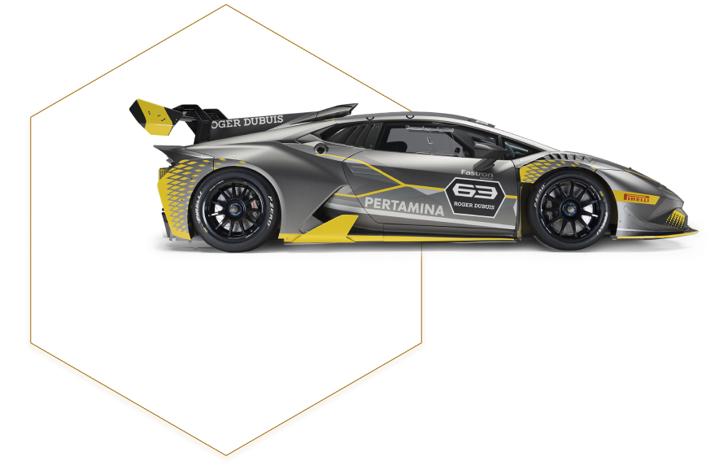
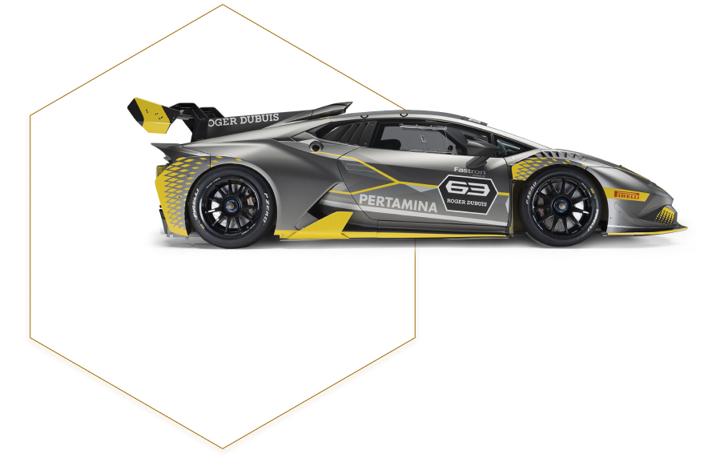

КОМАНДЫ СУПЕР ТРОФЕО
Все автомобили, которые участвуют в чемпионатах Lamborghini Super Trofeo, управляются
частными командами, которые используют свой опыт для тонкой настройки их для водителей.
Для каждого континентального чемпионата Lamborghini Super Trofeo существуют рейтинги
пилотов и команд.
Пилоты и команды, участвующие в континентальной серии, каждый год соревнуются друг с
другом в Гранд Финале Lamborghini, мероприятии, которое завершает спортивный сезон Super
Trofeo. Две квалификационные сессии и две гонки определяют чемпионов мира серии. Каждый
год Гранд-финал проводится на разных трассах, и в прошлых выпусках он уже затрагивал
европейский, азиатский и американский континенты.


 
